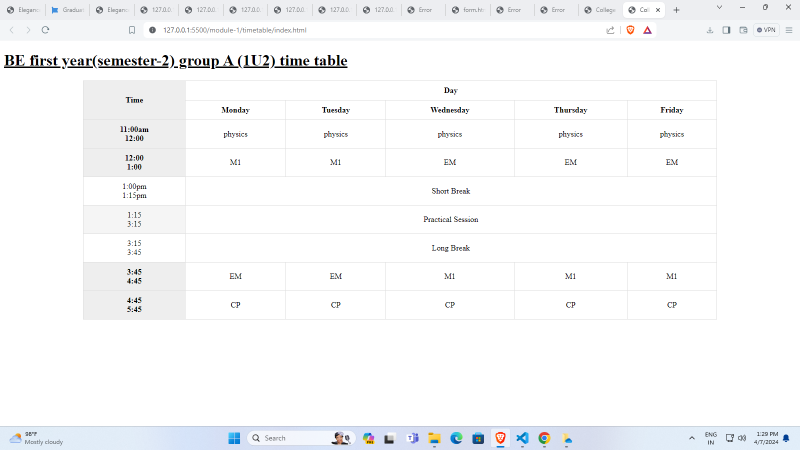
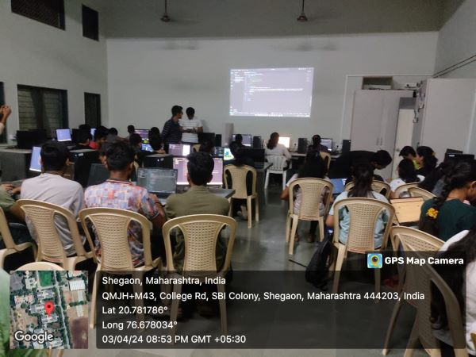

Day 1
The first module of the fab lab was Web development
It follows by learning of Html,Css and Javascript.
The day 1 was started by understanding the basic of
1st day we learnt tags like heading,image,paragragh,anker.

Assignment for day 1
Assignment no.1 Build the form using form tag etc..
Assignment No. 2 Build your own class time table using table tags etc...
My Assignment 1
My assignment 2
Day 2
The day 2 was started by understanding the basic of
CSS .we learnt how to apply properties like heigth ,width,color
margin paddings to the html file.
Assignment of day 2
Day 2 Assignment 1 Create the above webpage of resume make it attractive using your own creativity. Utilize
My Assingnment
Day 3
The day 3 was started by exploring the properties of
Css such as display,flex-direction,justify-content.
It was amazed to see the hover applied to the html file
such as colour transition ,size-transition,text transformation.
Assingnment of day 3
My Assignment
*Day 3 Assignment * Complete this homework and also complete your previous assignments in more creative way.
Day 4
The day 4 was started by understanding the basic of
Javascript. starting from the simple calculation to the guess the movie project.
Day 4 Assignment
Day 4 Assignment 1.Try to create a static web page displaying current time and date on clicking on the button. Also try to add World Clock on the same website. 2.Make it creative and attractive using gradient, hover, background images, etc. 3.Try to explore more about Javascript.
Day 5
The day 1 was started by understanding the basic of github.
It was amazed to host self-build project to our github